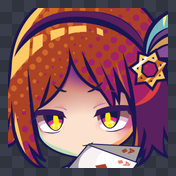
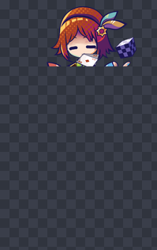
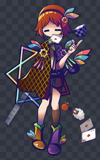
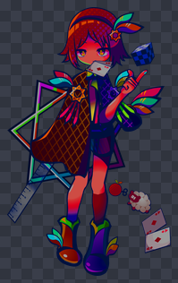
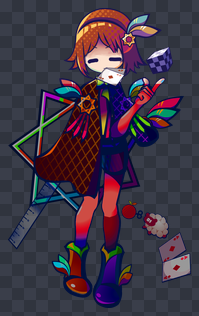

Добавление изображений
Моды могут поставлять свою графику. Положите её в Images/, и она загрузится.
Базовое правило
Mods/<ваш мод>/Images/<повторите структуру игры>/<имя>.pngRoleHead/ — значит, ваш мод кладёт их в Images/RoleHead/. Вот и всё.
Пример
MyMod/
├── mod.json
├── Data/
│ └── Role/
│ └── NewHero.json
└── Images/
├── RoleHead/
│ └── NewHero.png иконка лица
└── Role/
└── NewHero.png полный портретКарта папок
| Папка | Содержимое | Поле данных |
|---|---|---|
Images/Role/ | Полные портреты (персонажи и враги) | PSB |
Images/RoleHead/ | Иконки лиц | ImageName / EyeImageName |
Images/Icon/ | Иконки предметов и бафов | IconName |
Images/Background/ | Фоны | FightBackground, команда <BG> |
Images/Sticker/ | Графика стикеров | команда <Sticker> |
IconName включает вложенный путь
Иконка по адресу Images/Icon/Buff/MyIcon.png указывается как
"Icon/Buff/MyIcon".Остальные поля (
PSB, ImageName) принимают только имя файла.

RoleHead/Nausea.png300×300

Role/Nausea/…900×1479
Затем укажите их в данных:
{
"Name": "NewHero",
"Name_I2": "Новый герой",
"ImageName": "NewHero"
}.png
Файл лежит по адресу Images/RoleHead/NewHero.png, а в данных написано
"NewHero". Игра сама знает, в какой папке искать.
Варианты выражений и одежды
Портреты бывают двух видов — в зависимости от того, нужны ли вам варианты.
(A) Без вариантов — одно изображение
Images/Role/Nausea.png(B) С вариантами — вместо файла папка
Images/Role/Nausea/Body/Body_Normal.png
Images/Role/Nausea/Body/Body_Dark.png
Images/Role/Nausea/Face/Face_Normal.png
Images/Role/Nausea/Face/Face_Laugh.pngBody/Body_Normal.png

Face/Face_Laugh.png

что показывает играFace_Laugh.png нарисовано только лицо, но холст — во весь
рост. Движок складывает слои по одним и тем же координатам, поэтому выражениям
не нужны никакие координаты.
Обрежете его — и оно окажется в левом верхнем углу.
| Правило | Подробности |
|---|---|
| Имя папки = имя группы | Сейчас это Body (тело / одежда) и Face (выражение) |
| Имя файла = имя слоя | Префикс Body_ / Face_ добавляете вы сами |
| Каждое изображение — в полный размер | Полный холст, прозрачный фон, все одного размера |
| Порядок наложения | Складываются по одинаковым координатам, Face поверх Body |
Сочетание одежды и выражений
Normal + Normal
Normal + Laugh

Dark + Normal

Dark + Laugh
Сценарий выбирает сочетание командой
<Image>Mid,Nausea,Laugh,Dark.
Какой вариант показывается по умолчанию
| Ситуация | Результат |
|---|---|
в группе есть <Группа>_Normal | показывается он |
в группе нет Normal | вся группа по умолчанию скрыта |
То есть если вы поставляете только Face_Laugh.png, обычно выражения не будет
вовсе, пока его не запросит сценарий.
Face_Normal.png
В галерее команды игрок может листать все варианты выражений, и
<Группа>_Normal всегда первая страница — именно её
он видит, открыв портрет.Если дополнительных выражений нет, сделайте
Face_Normal.png
полностью прозрачным (лицо уже нарисовано на изображении Body).
Normal — он всегда первый.Если нужна отдельная страница «без выражения», следуйте соглашению игры и добавьте
Face_Null.png (полностью прозрачный) — имена, содержащие Null,
закрепляются на последней странице.
Переключение вариантов из сценария
<Image> — это слот, а не персонаж
Слоты: Mid / Left / Right. Имя персонажа начинается
со второго аргумента.
<Image>Mid,Nausea,Laugh лицо становится Face_Laugh
<Image>Mid,Nausea,,Dark тело становится Body_Dark
<Image>Mid,Nausea,Laugh,Dark и то, и другое сразу
<Image>Mid,Nausea,- полностью скрыть эту группу
<Image>Mid очистить этот слот
<Image> очистить все три слотаУ выражений и одежды префикс не пишется — указывайте Laugh,
а не Face_Laugh.
Две похожие команды не принимают аргумент слота и начинаются с имени персонажа:
<MateImage>Nausea,Laugh портрет на главном экране
<EnemyImage>Emma,Emma,Shock заменить портрет врага прямо в бою<EnemyImage> — это Name врага из данных
«Имя PSB, выражение, одежда» начинается со второго аргумента.
Формат
| Пункт | Требование |
|---|---|
| Формат файла | PNG |
| Прозрачность | Поддерживается (для портретов и иконок обычно обязательна) |
| Размеры | Жёсткого ограничения нет, но ориентируйтесь на такую же графику самой игры, иначе изображение будет слишком большим или слишком мелким |
Замена игровой графики
Используйте тот же путь и то же имя файла, что у оригинала, и победит ваш файл.
Images/RoleHead/Rackham.png <-- заменяет иконку лица РэкхемаЗдесь вложенные папки важны
В отличие от аудио, структура папок изображений участвует в поиске:
Images/RoleHead/Nausea.png <-- иконка лица
Images/Role/Nausea.png <-- полный портретЭто два разных изображения. Положите одно не в ту папку — и оно просто не найдётся.
Память
Контрольный список
Если изображение не показывается, по порядку:
- Это настоящий
.png? (а не переименованный JPG) - Он внутри
Images/? (с буквой s) - Вложенная папка написана верно? (
RoleHead, а неRolehead) ImageNameсовпадает с именем файла? (без.png)- Используете папки вариантов — добавили префикс
Body_/Face_? - Все изображения вариантов одного размера, во весь рост?
- Вы вернулись на главный экран и начали новую игру или загрузили сохранение?